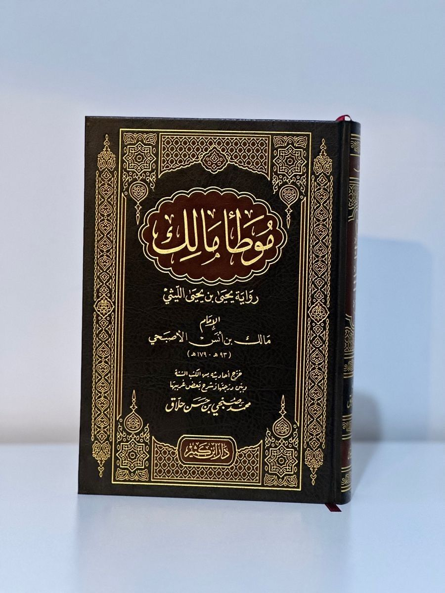

Daftar Produk Buku

Aqidah Thahawiyyah
Rp213.000
syarah lengkap membahas aqidah Ahlussunnah wal-Jama’ah berdasarkan Aqidah Thahawiyyah

Syarhu Sunnah
Rp137.000
karya klasik dalam aqidah Ahlussunnah wal Jamaah. Isi kitab ini memuat pokok-pokok keyakinan Sunnah yang mendasar dengan rujukan Qur’an & hadits

Aqidah Al-wasithiyyah
Rp140.00-Rp85.000
Kitab aqidah ringkas karya Imam Ibnu Taimiyyah yang menjelaskan prinsip-prinsip Ahlus Sunnah wal Jama‘ah berdasarkan Al-Qur’an dan Sunnah sesuai pemahaman Salaf. Membahas iman, nama dan sifat Allah, serta manhaj yang lurus dalam aqidah.

Tafsir Ath-thabariy
Rp620.000
Ditulis oleh Imam Muhammad ibn Jarir al-Tabari, kitab ini termasuk tafsir paling awal dan paling berpengaruh dalam sejarah Islam. Menghimpun riwayat sahabat dan tabi’in dengan sanad yang lengkap, serta analisis bahasa Arab yang mendalam.Disebut sebagai induk tafsir bil ma’tsur.

Shahih Al-bukhary
Rp450.000
Karya monumental Imam Muhammad ibn Ismail al-Bukhari ini merupakan kitab hadis paling shahih dalam Islam. Disusun dengan metode seleksi yang sangat ketat, kitab ini memuat ribuan hadis yang mencakup aqidah, ibadah, muamalah, hingga adab. Para ulama sepakat menempatkannya sebagai kitab paling sahih setelah Al-Qur’an.

Shahih Muslim
Rp420.000
Disusun oleh Imam Muslim ibn al-Hajjaj, kitab ini adalah rujukan hadis shahih kedua setelah Sahih Bukhari. Penyusunannya sistematis dan memudahkan pembaca memahami sanad serta perbedaan riwayat. Banyak dijadikan pegangan dalam kajian fikih dan aqidah.

Riyadh As-shalihin
Rp140.000
Disusun oleh Yahya ibn Sharaf al-Nawawi, kitab ini berisi hadis-hadis pilihan tentang akhlak, adab, ibadah, dan kehidupan sehari-hari. Ringkas, padat, dan mudah dipahami, sehingga sangat populer untuk majelis taklim dan pembelajaran keluarga.

Al-muwatha'
Rp350.000
Karya Imam Malik ibn Anas ini termasuk kitab hadis dan fikih tertua yang sampai kepada kita. Berisi hadis, atsar sahabat, dan pendapat tabi’in, kitab ini menjadi fondasi penting dalam mazhab Maliki serta referensi hukum Islam klasik.

Al-bidaya wa An-nihaya
Rp550.000
Ditulis oleh Ibn Kathir, kitab ini adalah ensiklopedia sejarah Islam yang sangat lengkap. Membahas kisah para nabi, sejarah umat terdahulu, perjalanan Rasulullah ﷺ, hingga peristiwa akhir zaman. Disusun berdasarkan riwayat yang kuat dan analisis ilmiah.